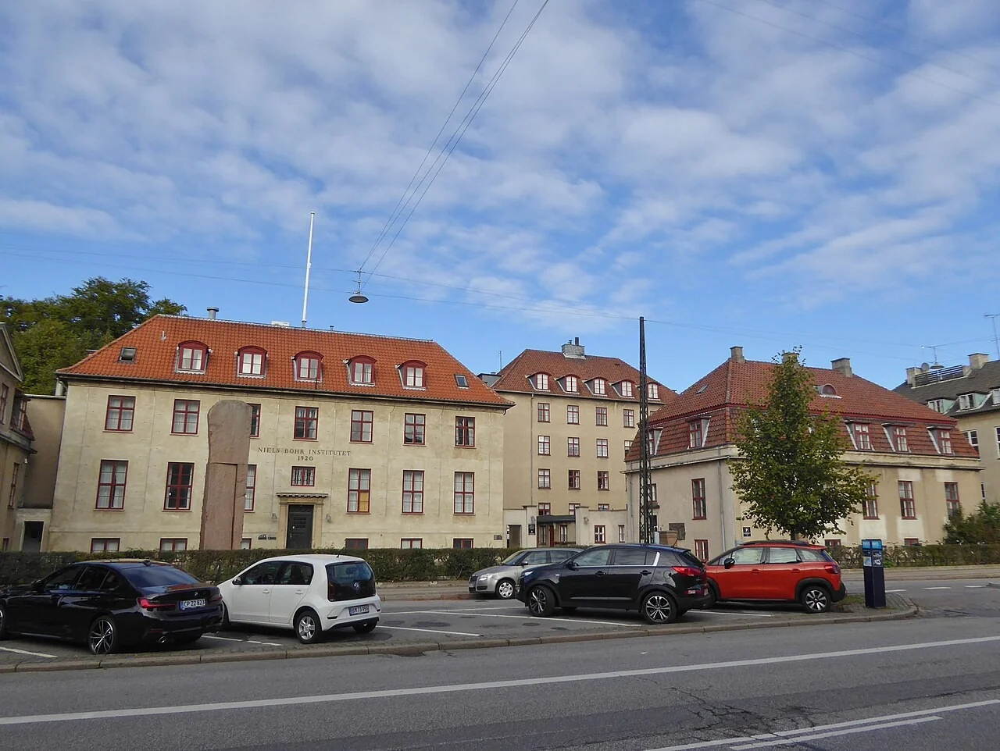
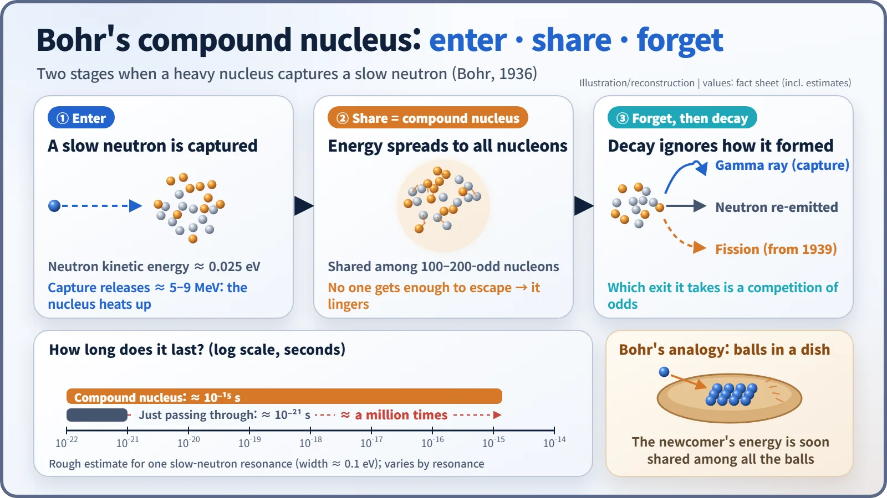
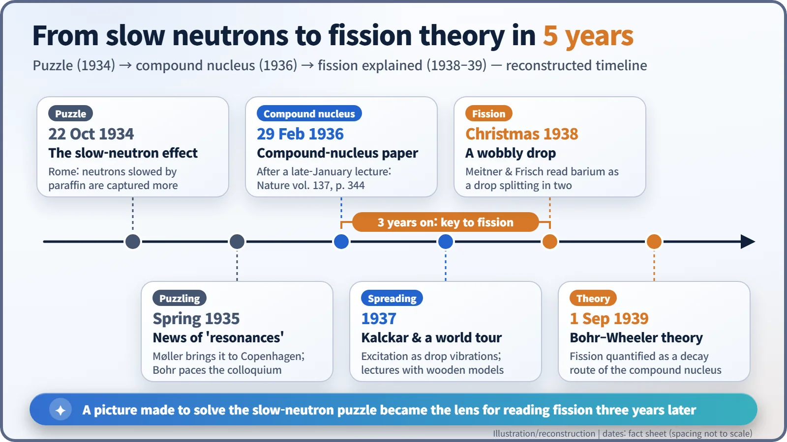

Nuclear History · 057
Not a Bag of Marbles but a Boiling Drop — Bohr's Compound-Nucleus Model (1936)
A neutron that cannot pass through a crowded nucleus shares its energy with every particle, and three years later that picture explained fission.
In early 1936 Niels Bohr explained why slow neutrons were captured so easily: inside a crowded nucleus, an incoming neutron instantly shares its energy with every other particle, forming a long-lived "compound nucleus" whose later break-up forgets how it was made. This picture of the nucleus as a drop of liquid became, three years later, the key to understanding nuclear fission.
A paper for leap day
Leap day, 29 February 1936. That week's issue of Nature, volume 137, opened on page 344 with an article by a Danish physicist who had already won a Nobel Prize for his model of the atom. Its title was "Neutron Capture and Nuclear Constitution", and its author was Niels Bohr (1885–1962). Those few pages, printed on a date that comes round only once every four years, changed the way physicists pictured the atomic nucleus. Three years later they would become the lens through which the world made sense of nuclear fission. [1]
Neutrons that were caught far too easily
The story begins a year earlier in Copenhagen. Around Easter 1935 the physicist Christian Møller came back from a short trip to Rome with news from Enrico Fermi's group. Neutrons that had been slowed down were being captured by nuclei astonishingly well, and at certain energies the absorption shot up in sharp peaks called resonances. [2]
The nucleus most physicists had in mind at the time was a miniature atom: protons and neutrons moving fairly freely in a shared field of force, much as electrons move around an atomic nucleus. In that picture, a neutron entering a nucleus should usually sail straight through, like someone strolling through a sparse orchard. The experiments said the opposite. In modern figures, natural cadmium absorbs thermal neutrons (neutrons slowed to roughly room-temperature speeds) with a cross-section of 2,520 barns, the "target area" a nucleus presents. The nucleus's geometric size is only about 1 barn, so the effective target is more than 2,000 times bigger than the nucleus looks. It was like a goal the size of your hand catching balls as if it were a football net. [5]
John A. Wheeler, a young American then working at Bohr's institute, later remembered the mood: "Everyone was actively concerned, but no one more so than Bohr, who paced up and down in the colloquium and took a central part in discussions." [2]

What a dish of marbles taught
Bohr had worked out his answer by the end of 1935. He presented it in a lecture in Copenhagen in late January 1936 and published it in Nature on 29 February. His key insight was that the particles inside a nucleus are packed so tightly that they collide constantly. An incoming neutron therefore cannot pass through. The moment it arrives, it bumps into its neighbours and hands its energy around until the energy is spread over the whole nucleus. Bohr called this shared, agitated state the compound nucleus. [1] [2]
He illustrated the idea with an image from everyday life. Picture a shallow dish holding a cluster of marbles, and roll one more marble in from the rim. It soon collides with the others and shares its energy among them, so it becomes very unlikely that any single marble will gather enough energy to jump back out of the dish.

The numbers make the point vivid. A slow neutron carries only about 0.025 eV of kinetic energy, but when a heavy nucleus captures it, roughly 5–9 MeV of binding energy is released and the whole nucleus heats up. That energy is split among a hundred or two hundred nucleons, so none of them can easily escape. If a neutron simply crossed a nucleus, the trip would take about 10−21 seconds. A rough estimate based on one typical slow-neutron resonance suggests that a compound nucleus lasts close to 10−15 seconds, about a million times longer, although the exact value differs from one resonance to another. In that time it calms down by emitting a gamma ray, or by letting go of one neutron that happens to have collected enough energy. A nucleus has many such excited states packed closely together, and when the incoming energy matches one of them, absorption soars. That was the resonance Fermi had seen.
The second elegant feature might be called amnesia. How a compound nucleus breaks up depends not on how it was formed, but on how much energy it holds. In Wheeler's words, a nuclear reaction occurs in "two well-separated stages": first the particle arrives and excites the nucleus, then the nucleus uses that energy for radiation, particle emission "or any other competing process". [2]
From a boiling drop to a splitting drop
If the energy is shared out like heat, the nucleus behaves less like a bag of marbles and more like a quivering drop of liquid. The liquid-drop picture was not Bohr's invention alone: George Gamow first suggested it in the late 1920s, and Carl Friedrich von Weizsäcker and Werner Heisenberg developed it further. Bohr's contribution was to give the drop rules for reactions through the compound nucleus. In 1937 he and his young colleague Fritz Kalckar treated the excited nucleus in terms of the vibrations of a drop, and Bohr toured the world giving lectures, carrying small wooden models with him. [2]
Even Bohr could not see where this would lead. The U.S. Department of Energy's history of the Manhattan Project notes that around this time Bohr, too, agreed that the chances of taming atomic energy were remote. [4]

The twist came around Christmas 1938 in Sweden. Lise Meitner and her nephew Otto Frisch had received a letter from Berlin reporting that uranium bombarded with neutrons produced much lighter barium. Walking in the snow, they thought of the liquid drop. As Frisch later recalled, the uranium nucleus "might indeed resemble a very wobbly, unstable drop, ready to divide itself at the slightest provocation, such as the impact of a single neutron." [3]
In January 1939, on board a ship bound for America, Bohr fitted the pieces together. Fission, he realised, was simply one more exit open to a compound nucleus, a decay route competing with gamma-ray emission and neutron re-emission. On 1 September 1939, a paper he wrote with Wheeler turned this idea into a quantitative theory. Later research showed that particles inside a nucleus are not quite as hopelessly entangled as Bohr assumed, and other pictures such as the shell model followed. Even so, the first step toward understanding reactors that run on slow neutrons still begins with that dish of marbles. [2]